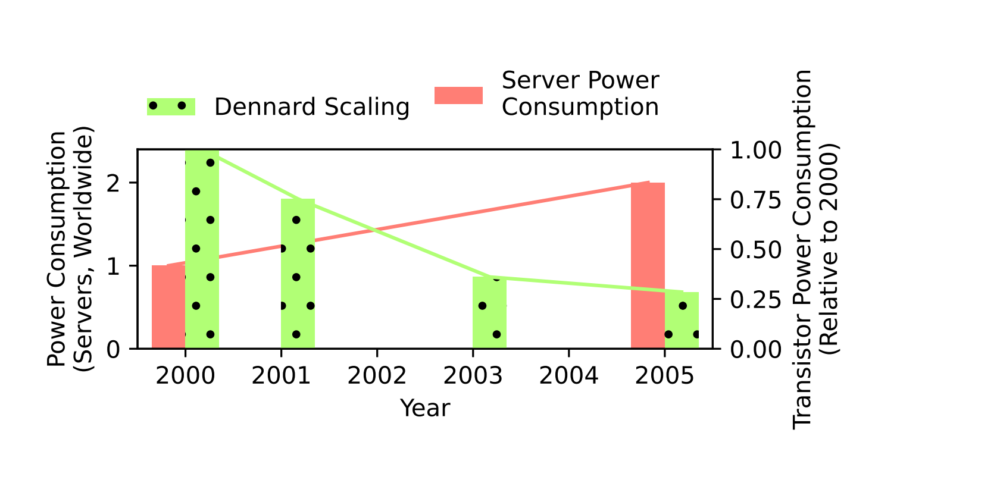

When Does Saving Power Save the Planet?¶
The Economics of Productivity¶
In economics, productivity is the ratio of useful outputs to scarce inputs.
Technological innovation drives productivity growth
Therefore, productivity growth will cause us to use fewer resrouces, right? 🙃
The Coal Paradox of 1865¶
William Jevons, 1865, “The Coal Question; An Inquiry Concerning the Progress of the Nation, and the Probable Exhaustion of Our Coal Mines”
It is wholly a confusion of ideas to suppose that the economical use of fuel is equivalent to a diminished consumption. The very contrary is the truth.
Now commonly applied to various problems in economics
Rebound Effects in computing and ML¶

When Does Saving Power Save the Planet?¶
Power efficiency will rarely directly reduce carbon due to rebound.
Rebound makes the argument for power efficiency more compelling, not less
Power efficiency can target the 98% by increasing the accessiblity and utility of computation